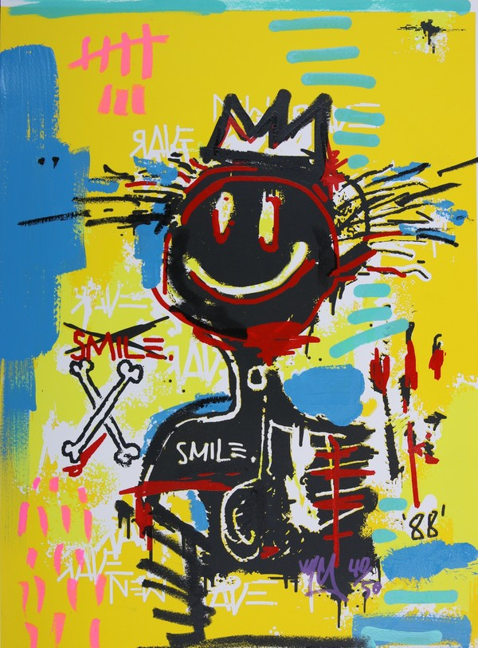
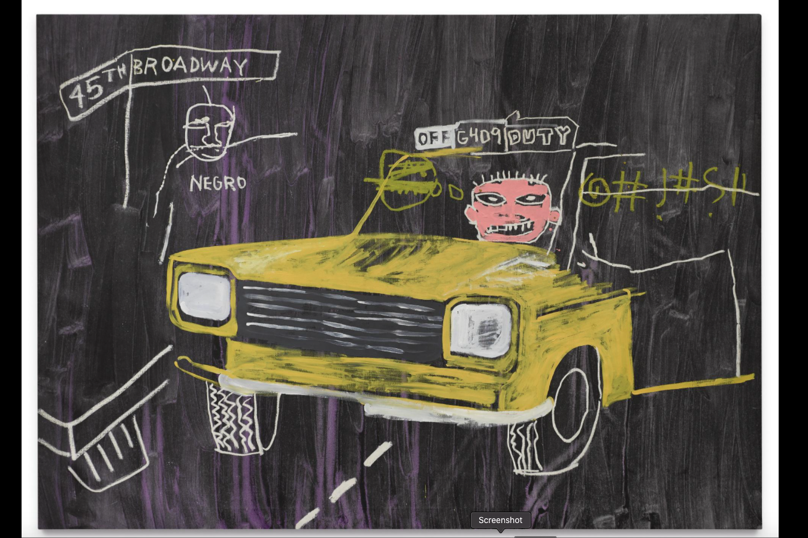

In 1982, Basquiat made his name known as he opened six solos shows in cities across the globe. His neo-expressionist paintings caught the eye of many as his works were soon featured in galleries and museums worldwide. In fact, at just the age 21, he became the youngest artist to ever be featured at Documenta in Kassel. In addition, just a year later, he also became the youngest artist to have an exhibit at the Whitney Biennial in New York. Additionally, in the early 80s, Basquiat collaborated with well known artist, Andy Warhol. All these accomplishments contributed him to being featured in New York Times Magazine as the hot young american artist of the 1980s.
As a minority in his schools, Basquiat faced racism and bullying daily. He did not have as many friends, so he was often left with his own deep thoughts. Those feelings and emotions he went through as a child all the way to when he was an adult were reflected in his artwork. Therefore, he made sure that his artwork was more than just pretty colors and designs. His art sought to bring attention to suggestive dichotomies which included: wealth versus poverty, inner versus outer experiences, integration versus segregation, etc. Art has always been white-washed, but especially back when he started creating. He wanted to represent his culture and race, but he did not want to be an artist only known for his race. Instead, he wanted to simply be considered a “famous” and “mainstream” artist.
Unfortunately, due to a drug overdose, Basquiat died at 27 years. Even with his short life, he still managed to leave an imprint in the art community, and the society as a whole as his art focused on such controversial issues. His work inspired graffiti artist, film makers, poets, etc to either reference his art, or create new art based off of his neo-expressionist ideas.
